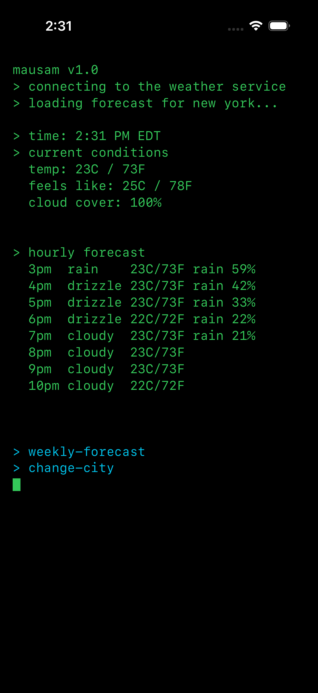
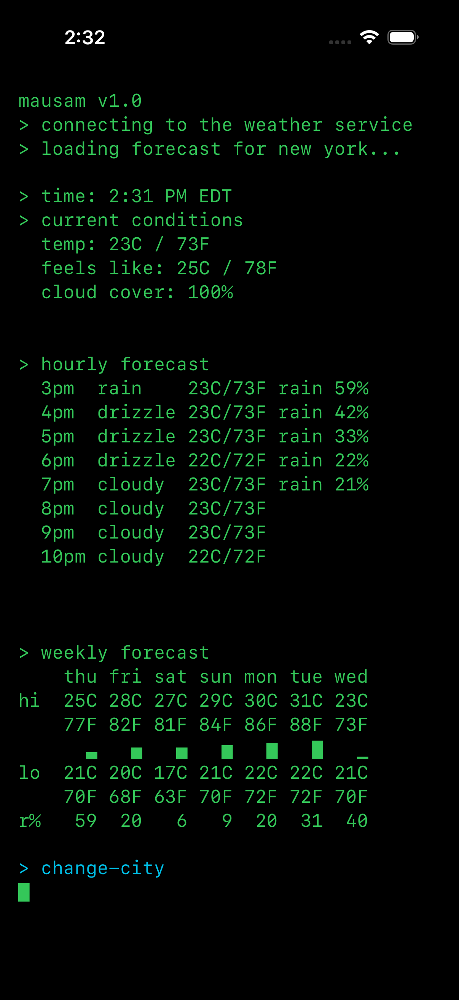

Meta
Mar 2024 — Aug 2026Software Engineer · New York
Mobile networking across Instagram, Messenger, Threads, and WhatsApp. Faster requests, leaner binaries, and better diagnostics.
PUBLIC BUILDS / RESEARCH / OCCASIONAL SIDEQUESTS
A few things with a life
outside my editor.
the terrible weather app.
A terminal-inspired weather app that never asks for your location. Pick a city. Check the forecast. Carry on with the sidequests.


> location_tracking = falseTHE MAIN QUESTS
I build backend services and infrastructure.
Currently looking for the next good problem.
Software Engineer · New York
Mobile networking across Instagram, Messenger, Threads, and WhatsApp. Faster requests, leaner binaries, and better diagnostics.
Software Development Engineering Intern · Seattle
Event-driven monitoring and automated ticket routing on AWS. Five minutes saved per ticket per developer.


THE PERSON IN THE PHOTOGRAPHS
Over two decades of experience in tomfoolery, dilly dallying, and lollygagging. A couple of those years also involved software engineering.
I’m back in Ahmedabad after ASU and New York. Trying to rediscover my love and curiosity around building things — through the useful, the playful, and the slightly ridiculous.
M.S. + B.S. Computer Science, ASU · 4.0 GPA
Former president, Women in Computer Science: a 100+ member chapter.
I’m looking for backend & infrastructure roles in India.
Available immediately, and open to relocation.